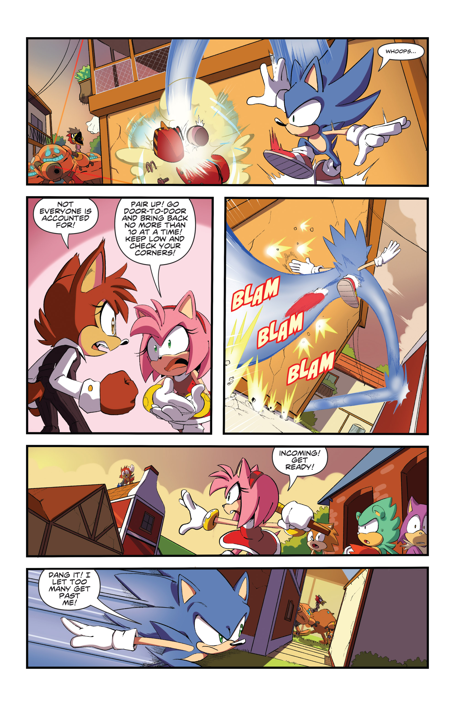

Reading View
A small corner box at the top left of the comic cover.IDW ISSUE 2 COVER A
The word 'Sonic' is in big gold and blue lettering, 'The Hedgehog' is in white on a red backdropSONICTHE HEDGEHOG
Flynn • Thomas
SEGA
Written by Ian Flynn Art by Adam Bryce Thomas Letters By Corey Breen Edited by Joe Hughes & David Mariotte Published by Greg Goldstein
Special thanks to Anoulay Tsai, Mai Kiyotaki, Aaron Webber, Michael Cisneros, Sandra Jp, and everyone at Sega for their invaluable assistance. For international rights, contact licensing@idwpublishing.com
IDWwww.IDWPUBLISHING.com
Greg Goldstein, President & Publisher • Robbie Robbins, EVP & Sr. Art Director • Matthew Rozicka, CPA, Chief Financial Officer • David Hedgecock, Associate Publisher • Laurie Windrow, Sr. VP of Sales & Merketing • Lorelei Bunjes, VP of Digital Services • Jerry Bennington, VP of New Product Development • Eric Moss, Sr. Director, Licensing & Business Development Ted Adams, Founder & CEO of IDW Media Holdings
SEGA
Facebook: facebook.com/idwpublishing • Twitter: @idwpublishing YouTube: youtube.com/idwpublishiing Tumblr: tumblr.idwpublishing.com Instagram:: instagram.com/idwpublishing
SONIC THE HEDGEHOG #2. APRIL 2018. FIRST PRINTING. © SEGA. Sega, the SEGA logo and SONIC THE HEDGEHOG are either registered trademarks or trademarks of SEGA Holdings Co., Ltd. or its affiliates. All rights reserved. SEGA is registered in the U.S. Patent and Trademark Office. All other trademarks, logos and copyrights are property of their respective owners. © 2018 Idea and Deign Works, LLC. All Rights Reserved. IDW Publishing, a division of Idea and Design Works, LLC. Editorial officesL 2765 Truxton Road, San Diego, CA 92106. The IDW logo is registed in the U.S. Patent and Trademark Office. Any similarities to persons living or dead are purely coincidental. With the exception of artwork used for review purposed, none of the contents of this publication may be reprinted without the permission of Idea and Design Works, LLC. Printed in Canada. IDW Publishing does not read or accept unsolicited submissions of ideas, stories, or artwork.
A Death Crab Super Badnik is seen leaving a forest, tearing down trees in its wake
as it heads toward a river. Sonic is seen as a blur blur, launching off a cliff towards
the robot.
SONIC: Not a bad race, big guy! But there's no way I'm letting you trample that town!
As the Death Crab enters the river, Sonic sprints across the water's surface, his legs a red blur. The Death Crap attempts to swat him with a claw.
As the Death Crab enters the river, Sonic sprints across the water's surface, his legs a red blur. The Death Crap attempts to swat him with a claw.
Sonic dashes up the leg of the Death Crab, a determined look on his face.
SMASH
SMASH
Bouncing ooff the Crab's spikes, Sonic climbs up its leg.
SMASH
Bouncing ooff the Crab's spikes, Sonic climbs up its leg.
Sonic glides down towards the Crab's face.
Sonic lands in a sprinter's pose, with both hands on the ground, lunging forward.
VREEVREEVREE
Sonic rolls into a ball, spinning in place and kicking up a large cloud of dust.
Sonic rolls into a ball, spinning in place and kicking up a large cloud of dust.

SMASH
Sonic slams into the Death Crab's face, cracking its surface. The Crab's head begins exploding.
Sonic slams into the Death Crab's face, cracking its surface. The Crab's head begins exploding.
SMASH
SMASH
SMASH
Sonic leaps off the Death Crab as it explodes, leaving sonic booms in his wake.
SMASH
SMASH
Sonic leaps off the Death Crab as it explodes, leaving sonic booms in his wake.
Sonic lands on the Death Crab's outstretched arm.
Sonic launches off the Crab's limb, warping its surface with his force as he flies
into the sky.
As Sonic leaps high into the air, the Death Crab begins to buckle. On the ground,
some villagers watch or run in terror.
THOOM
Sonic flies into the top of the Death Crab's head, inciting a massive explosion.
Sonic flies into the top of the Death Crab's head, inciting a massive explosion.
SONIC: Ta-Dahhhh! ♫
Sonic!
UNNAMED_VILLAGER_A: That was so cool!
YAAAAY!
UNNAMED_VILLAGER_B: I thought we were goners!
Sonic!
UNNAMED_VILLAGER_C: How do you move like that?!/cbml:balloon>
Sonic!
SONIC: Thank you, thank you.
The villagers crowd around Sonic, leaping excitedly. Sonic stands smugly.
UNNAMED_VILLAGER_A: That was so cool!
YAAAAY!
UNNAMED_VILLAGER_B: I thought we were goners!
Sonic!
UNNAMED_VILLAGER_C: How do you move like that?!/cbml:balloon>
Sonic!
SONIC: Thank you, thank you.
The villagers crowd around Sonic, leaping excitedly. Sonic stands smugly.
UNNAMED_VILLAGER_C: Look out!
UNNAMED_VILLAGER_D: Run!
The villagers start running away. One points behind Sonic, who looks shocked as he turns around.
UNNAMED_VILLAGER_D: Run!
The villagers start running away. One points behind Sonic, who looks shocked as he turns around.
CREEEEEEEEAK
The Death Crab reaches forward with one claw, its eye glinting menacingly. Sonic begins to turn around, smiling.
The Death Crab reaches forward with one claw, its eye glinting menacingly. Sonic begins to turn around, smiling.
AMY: Hyah!
PIKO
Amy Rose appears, smashing the Death Crab with her Piko Piko Hammer. Sonic is wowed by this.
PIKO
Amy Rose appears, smashing the Death Crab with her Piko Piko Hammer. Sonic is wowed by this.
: You're getting sloppy, Sonic.
SONIC: A-Amy. Fancy meeting you here.
Amy wags her finger at Sonic, chastising him. Sonic looks vaguely annoyed.
SONIC: A-Amy. Fancy meeting you here.
Amy wags her finger at Sonic, chastising him. Sonic looks vaguely annoyed.
AMY: I heard about what you and Tails did in the neighboring town and hurried over! I just
knew you'd stop by here!
Amy laughs while kneading her face with one hand, blushing.
Amy laughs while kneading her face with one hand, blushing.
SONIC: Huh. Word travels fast...
Sonic looks to the side nonchalantly.
Sonic looks to the side nonchalantly.
SONIC: ...Ah, nevermind. Looks like things are under control here. Thanks for the save! Laters!
AMY: Sonic-Wait! I came out here specifically to find you!
Sonic grumpily stalks away from the fallen Death Crab. Amy reaches after him.
AMY: Sonic-Wait! I came out here specifically to find you!
Sonic grumpily stalks away from the fallen Death Crab. Amy reaches after him.
SONIC: I know. It's kinda your thing.
AMY: Not like that! I mean, I'm always happy to see you. And would follow you anywhere if you'd only let me but- -OOH! You get me so flustered!
Sonic points at Amy, who pouts while blushing.
AMY: Not like that! I mean, I'm always happy to see you. And would follow you anywhere if you'd only let me but- -OOH! You get me so flustered!
Sonic points at Amy, who pouts while blushing.
AMY: Sonic-I need you to come back to the resistance.
SONIC: Come back? I thought you all were doing clean-up not that the war is over?
Amy grabs Sonic hands. Sonic looks at her confusedly.
SONIC: Come back? I thought you all were doing clean-up not that the war is over?
Amy grabs Sonic hands. Sonic looks at her confusedly.
AMY: That was the plan, but we didn't account for just how large the Eggman Empire's army
was.
The leftover robots are everywhere. Even without Eggman to lead them, they're a constant
threat, randomly attacking anyone they find.
Amy looks off to the side, a worried look on her face.
Amy looks off to the side, a worried look on her face.
AMY: The Resistance is working to finish the fight. By working from a centralized, organized
position, we can be way more effective.
Sonic stands with his arms crossed. Amy leans on her hammer pensively.
Sonic stands with his arms crossed. Amy leans on her hammer pensively.
SONIC: Nah, pass.
AMY: Oh, for the love of - Why?!
Amy shouts angrily as Sonic walks away unconcerdedly.
AMY: Oh, for the love of - Why?!
Amy shouts angrily as Sonic walks away unconcerdedly.
SONIC: Tails pointed out something that's been bugging me. The last group of Badniks we faced
was way more organized.
But Eggman hasn't shown up t oclaim responsibility. Subtly is not his forte.
Sonic gestures explainedly as he recalls when he and Tails met in Vista View.
Sonic gestures explainedly as he recalls when he and Tails met in Vista View.
SONIC: And now you just happen to hear about where I am, right in time for another Super
Badnik to attack where we're both likely to be?
AMY: Yikes...I hadn't thought of that.
Sonic gestures towards the fallen Death Crab. Amy leans forward, interested.
AMY: Yikes...I hadn't thought of that.
Sonic gestures towards the fallen Death Crab. Amy leans forward, interested.
AMY: Then it's all the more reason for you to come back to the Resistance!
SONIC: No, it's all the more reason for me to hit the road and find out what's going on!
Amy shouts frustratedly, while Sonic mimes walking away.
SONIC: No, it's all the more reason for me to hit the road and find out what's going on!
Amy shouts frustratedly, while Sonic mimes walking away.
AMY: You could spend weeks - or months - bouncing around settlements looking for clues!
SONIC: Saving more folks from more Badnik attacks. It's win-win for everyone!
Amy sighs while Sonic slams his hands together.
SONIC: Saving more folks from more Badnik attacks. It's win-win for everyone!
Amy sighs while Sonic slams his hands together.
LANOLIN: Sonic! Ms. Rose! Emergency! We're under attack. *GASP*
Lanoling rushes forward, out of breath, surprising Amy and Sonic.
Lanoling rushes forward, out of breath, surprising Amy and Sonic.
SONIC: It's cool. We took out the Super Badnik.
LANOLIN: *PANT*
No! I mean an army! Invading from the West!
Sonic smiles confidently, but Lanolin appears distressed.
LANOLIN: *PANT*
No! I mean an army! Invading from the West!
Sonic smiles confidently, but Lanolin appears distressed.
SONIC: The crab-bot was a decoy...
AMY: We've got to stop the invasion before the city is over-run!
Sonic and Amy look at each other, ready for action.
AMY: We've got to stop the invasion before the city is over-run!
Sonic and Amy look at each other, ready for action.
SONIC: I'll run ahead and thin them out!
AMY: Do you have any kind of defenses?
LANOLIN: We turned Town Hall into a bunker of sorts during the war...
AMY: Take me there!
Sonic runs ahead. Amy runs beside Lanolin, behind him.
AMY: Do you have any kind of defenses?
LANOLIN: We turned Town Hall into a bunker of sorts during the war...
AMY: Take me there!
Sonic runs ahead. Amy runs beside Lanolin, behind him.
Sonic dashes towards aome invading Egg Walkers resembling birds.
AMY: Get all the unarmed inside! If you can fight, rally to me!
Amy directs the villagers towards the Town Hall. A yellow rabbit, fox, and white sheep run indoors.
Amy directs the villagers towards the Town Hall. A yellow rabbit, fox, and white sheep run indoors.
Sonic runs along a wall while the Egg Walkers fire missiles at them.
AMY: Get to the upper floors! Don't fire until the Badniks have entered the square!
Amy grabs a brown bird and points behind them. A red fox stands behind Amy, wielding two guns.
Amy grabs a brown bird and points behind them. A red fox stands behind Amy, wielding two guns.
WHAM
Sonic dashes between the Egg Walkers, destroying them one after another.
Sonic dashes between the Egg Walkers, destroying them one after another.
SONIC: Whoops...
As Sonic lands on the ground after destroying an Egg Walker, more Walkers and Egg Pawns round a nearby corner, catching Sonic in their laser sights.
As Sonic lands on the ground after destroying an Egg Walker, more Walkers and Egg Pawns round a nearby corner, catching Sonic in their laser sights.
UNNAMED_VILLAGER_E: Not everyone is accounted for!
AMY: Pair up! Go door-to-door and bring back no more than 10 at a time! Keep low and check your corners!
A brown fox in a suit and Amy are in a heated discussion.
AMY: Pair up! Go door-to-door and bring back no more than 10 at a time! Keep low and check your corners!
A brown fox in a suit and Amy are in a heated discussion.
BLAM
BLAM
BLAM
Sonic bounces between an alley's walls, avoiding bulletfire coming from above and behind him.
BLAM
BLAM
Sonic bounces between an alley's walls, avoiding bulletfire coming from above and behind him.
AMY: Incoming! Get ready!
Amy gestures towards a villager on a nearby roof, holding her hammer behind her head. Worried looking animals gather behind her.
Amy gestures towards a villager on a nearby roof, holding her hammer behind her head. Worried looking animals gather behind her.
SONIC: Dang it! I let too many get past me!
Sonic glances angrily through an alley as he runs past it. Egg Pawns and Egg Walkers are seen marching past.
Sonic glances angrily through an alley as he runs past it. Egg Pawns and Egg Walkers are seen marching past.
POW
POW
POW
The villagers gathered outside the Town Hall open fire on the approaching Badniks, standing behind barriers or crouching on the rooftop.
POW
POW
The villagers gathered outside the Town Hall open fire on the approaching Badniks, standing behind barriers or crouching on the rooftop.
AMY: Now!
Amy swings her hammer forward.
Amy swings her hammer forward.
POW
POW
POW
POW
Lanolin, along with others, begins firing at the Egg Pawns from neighboring rooftops.
POW
POW
POW
Lanolin, along with others, begins firing at the Egg Pawns from neighboring rooftops.
POW
POW
POW
POW
The Egg Pawns are blown away by the barrage of lasers, firing wildly into the air.
POW
POW
POW
The Egg Pawns are blown away by the barrage of lasers, firing wildly into the air.
Yaaaay!
Whoo-hoo!
AMY: The first wave is down!
Amy raises her fist in celebration. Sonic brushes his hands together, even though he didn't really do anything.
Whoo-hoo!
AMY: The first wave is down!
Amy raises her fist in celebration. Sonic brushes his hands together, even though he didn't really do anything.
SONIC: I thought Knuckles was the commander of the Resistance
AMY: Oh, he commanded alright. But who do you think kept things organized?
Sonic crosses his arms, smiling. Amy does a sarcastic shrugging motion.
AMY: Oh, he commanded alright. But who do you think kept things organized?
Sonic crosses his arms, smiling. Amy does a sarcastic shrugging motion.
SONIC: Nice
So what's the plan?
AMY: This is a good defensible position, and the militia is placed well, but...
Sonic and Amy stand in front of the damaged Town Hall. Militia members stand on the roof and behind barriers. The field in front of the Town Hall is littered with broken Badnik bodies.
AMY: This is a good defensible position, and the militia is placed well, but...
Sonic and Amy stand in front of the damaged Town Hall. Militia members stand on the roof and behind barriers. The field in front of the Town Hall is littered with broken Badnik bodies.
SONIC: Too many Badniks?
AMY: Too many Badniks. We'll be overrun. We need to find where they're coming from and thin their advance so the villagers can stand a chance.
Sonic furrows his brow. Amy looks down determinedly.
AMY: Too many Badniks. We'll be overrun. We need to find where they're coming from and thin their advance so the villagers can stand a chance.
Sonic furrows his brow. Amy looks down determinedly.
SONIC: Shall we?
AMY: Let's!
Sonic reaches out his hand, and Amy smiles and begins to take it.
AMY: Let's!
Sonic reaches out his hand, and Amy smiles and begins to take it.
FASSSH
Sonic and Amy barrel through a crowd of Badniks in an alleyway, appearing as a pink and blue blur.
Sonic and Amy barrel through a crowd of Badniks in an alleyway, appearing as a pink and blue blur.
PIKO
Sonic runs ahead, dragging Amy by her hand. Amy destroys passing Badniks with her Piko Piko Hammer.
Sonic runs ahead, dragging Amy by her hand. Amy destroys passing Badniks with her Piko Piko Hammer.
FWASH
Sonic throws Amy into the air, and she spins like a top.
Sonic throws Amy into the air, and she spins like a top.
Amy destroys a ring of Egg Pawns with a single spin of her hammer, a vindictive smile
on her face.
Sonic catches amy in his arms. Amy is very happy about this.
AMY: Whee! Isn't this fun?
SONIC: Oh yeah!
Sonic throws Amy into the air, who readies a swing while looking back at him. Bullets are fired at Sonic from all directions, and a missile is flying right at Amy.
SONIC: Oh yeah!
Sonic throws Amy into the air, who readies a swing while looking back at him. Bullets are fired at Sonic from all directions, and a missile is flying right at Amy.
PIKO
BOOOM
Amy spikes a missile downwards with her hammer, causing a massive explosion and destroying the Badniks below.
BOOOM
Amy spikes a missile downwards with her hammer, causing a massive explosion and destroying the Badniks below.
Amy lands on the groundnext to Sonic, who taps his foot impatiently.
AMY: Y'know - you could do this sort of thing all the time with the Resistance.
Amy smiles at Sonic, fluttering her eyelashes. Sonic looks frankly, disgusted.
Amy smiles at Sonic, fluttering her eyelashes. Sonic looks frankly, disgusted.
SONIC: Nope.
AMY: Oh, come on!
Sonic turns to run away. Amy looks exasperated.
AMY: Oh, come on!
Sonic turns to run away. Amy looks exasperated.
SONIC: I already told you what I'm gonna do!
Sonic vaults over an Egg Walker, directing its fire breath towards the Egg Pan behind him.
Sonic vaults over an Egg Walker, directing its fire breath towards the Egg Pan behind him.
AMY: You didn't even consider coming back!
PIKO
Amy crushes an Egg Walker's head with her hammer while looking to the side surprisedly.
PIKO
Amy crushes an Egg Walker's head with her hammer while looking to the side surprisedly.
SONIC: I don't need to!
Sonic runs straight up a wall, an angry tic-mark appearing on his forehead.
Sonic runs straight up a wall, an angry tic-mark appearing on his forehead.
FASSSH
SMASH
Sonic leaps down and smashes into the ground, creating a shockwave tha knocks back the nearby Egg Pawns.
SMASH
Sonic leaps down and smashes into the ground, creating a shockwave tha knocks back the nearby Egg Pawns.
SONIC: I already know what works best for me.
PIKO
AMY: Well, what about what worls best for the rest of us?
Sonic brushes himself off. Amy smashes an Egg Pawn's head.
PIKO
AMY: Well, what about what worls best for the rest of us?
Sonic brushes himself off. Amy smashes an Egg Pawn's head.
SONIC: I'm no good at figuring that stuff out. You are. So you do your thing, I'll do mine.
Behind you.
AMY: If you won't do it for the resistance, do it for me?
Sonic shrugs. An Egg Walker approaches Amy from behind.
AMY: If you won't do it for the resistance, do it for me?
Sonic shrugs. An Egg Walker approaches Amy from behind.
SONIC: Can't play favorites.
AMY: HNG! Then do it for your friends?! Egg Pawns closing in. Thirty feet.
PIKO
Sonic raises one of his fingers, a hand on his hip. Amy swings behind her without looking, knocking away the Egg Walker.
AMY: HNG! Then do it for your friends?! Egg Pawns closing in. Thirty feet.
PIKO
Sonic raises one of his fingers, a hand on his hip. Amy swings behind her without looking, knocking away the Egg Walker.
SONIC: They've got you, remember?
AMY: Do it for a chili-dog?!
SONIC: Ooh! Now you're talking!
AMY: Seriously?!
Sonic runs away, winking. Amy yells after him.
AMY: Do it for a chili-dog?!
SONIC: Ooh! Now you're talking!
AMY: Seriously?!
Sonic runs away, winking. Amy yells after him.
Sonic dashes straight into an Egg Pawn, warping the air around him.
SONIC: Yo! Enemy drop ship just outside the village. Looks like it still has plenty aboard.
AMY: That's not good!
Sonic and ay aome to the top of a set of stairs. Sonic looks into the distance.
AMY: That's not good!
Sonic and ay aome to the top of a set of stairs. Sonic looks into the distance.
AMY: There's no way we can get through that crowd.
SONIC: Conventionally? No.
In the distance, a Blowfish Transporter hovvers above the ground, dropping a crowd of Egg Pawns.
SONIC: Conventionally? No.
In the distance, a Blowfish Transporter hovvers above the ground, dropping a crowd of Egg Pawns.
SONIC: I think it's time for a Croquette Bomber.
AMY: From this distance? You are a daredevil.
Sonic grins sneakily. Amy gives him the sideeye.
AMY: From this distance? You are a daredevil.
Sonic grins sneakily. Amy gives him the sideeye.
VREEVREEVREE
Sonic revs in place as Amy preps a hammer swing behind him.
Sonic revs in place as Amy preps a hammer swing behind him.
PIKO
Amy launches Sonic towards the Blowfish Transporter with a swing of her Piko Piko Hammer.
Amy launches Sonic towards the Blowfish Transporter with a swing of her Piko Piko Hammer.
Wha-BOOOM
As the Blowfish Transporter explodes in the distance, Amy shields her eyes.
As the Blowfish Transporter explodes in the distance, Amy shields her eyes.
AMY: Are you okay?!
SONIC: HA! HA! HA! You knocked me right onto the power cell! What a shot!
Sonic is left burned to a crisp on the ground. Amy runs toward him.
SONIC: HA! HA! HA! You knocked me right onto the power cell! What a shot!
Sonic is left burned to a crisp on the ground. Amy runs toward him.
AMY: That's it for the invasion. I guess... You'll be going then...
SONIC: Yep!
Sonic stretches as Amy looks down bashfully.
SONIC: Yep!
Sonic stretches as Amy looks down bashfully.
SONIC: It's what I do. Just keep moving, doing good, saving folks, and living as free as
the wind.
Living by my way. My own way.
Sonic stands in an epic pose, stylistically shadowed by the setting sun.
Sonic stands in an epic pose, stylistically shadowed by the setting sun.
AMY: *Siiiiiiiigh...*
Amy blushes profusely.
Amy blushes profusely.
Amy shakes her head vigorously.
SONIC: ...A-Amy?
AMY: You're right.
Sonic cringes. Amy closes her eyes and smiles.
AMY: You're right.
Sonic cringes. Amy closes her eyes and smiles.
SONIC: I am?
AMY: It's just who you are - and it's all the reasons I love you. I can't change you. I don't want to change you.
Amy grabs Sonic's hands. He looks surprised, and worried.
AMY: It's just who you are - and it's all the reasons I love you. I can't change you. I don't want to change you.
Amy grabs Sonic's hands. He looks surprised, and worried.
SONIC: Heh...Well...It's not like it's all or nothing. You could come with me.
AMY: I can't. The Resistance needs me to keep everything in order. I've been away too long as it is.
Sonic and Amy walk among the Blowfish Transporter's ruins.
AMY: I can't. The Resistance needs me to keep everything in order. I've been away too long as it is.
Sonic and Amy walk among the Blowfish Transporter's ruins.
AMY: But if you don't mind some direction, Knuckles went to investigate a town to the South.
I haven't heard from him, so he might need your help.
SONIC: Aye-aye, Cap'n Commander Rose, ma'am.
AMY: Don't make me slap you.
Sonic salutes Amy, who sighs exasperatedly.
SONIC: Aye-aye, Cap'n Commander Rose, ma'am.
AMY: Don't make me slap you.
Sonic salutes Amy, who sighs exasperatedly.
"Another failure. I did not account for how much Amy Rose has grown."
Sonic dashes away, throwing one last wave back to Amy, who waves back, grinning. An Egg Flapper lurks in the background.
Sonic dashes away, throwing one last wave back to Amy, who waves back, grinning. An Egg Flapper lurks in the background.
???: And now Sonic is deviating from my projected path. How... Frustrating.
ORBOT: On the bright side, Bodd, here's what he's charging headlong towards.
A hidden figure sits on a chair emblazoned with Dr. Eggman's symbol. Cubot and Orbot stand behind the chair, Orbot holding a tablet.
ORBOT: On the bright side, Bodd, here's what he's charging headlong towards.
A hidden figure sits on a chair emblazoned with Dr. Eggman's symbol. Cubot and Orbot stand behind the chair, Orbot holding a tablet.
???: Ahh... Perhaps they will finish him for me...
Orbot reveals the tablet, showing the skunk brothers, Rough and Tumble. Cubot looks very distressed, for a robot.
Orbot reveals the tablet, showing the skunk brothers, Rough and Tumble. Cubot looks very distressed, for a robot.
Sonic is in blue and gold lettering, Letters Squad in white, all on a red backdropSonic Letters Squad
Hello Sonic fans! Hope you enjoed the second issue of Sonic the Hedgehog from IDW Publishing! This time the blue blur and Amy kicked those badniks' ro-butts with the help of Ian Flynn, Adam Bryce Thomas, and Corey Breen! Give big ups to those guys for such a fun issue! Now, we asked and you delivered, so here are some letters, fan art, and cosplay from you lovely people! And there's the star of this month's issue, Amy Rose! Nice job, Micheal!
Art by Michael Carville (DatMichaelGuy)
Hey Sonic crew! I don't have much to say, other than wanting to tell you that I'm TOTALLY STOKED. Sonic was my first comic book, and I'll be collecting this new series for as long as it runs. I've been trying to get a letter published in a Sonic comic since I was 8 - and now, at 31, I work at a comic book stare and have been actively pushing the IDW Sonic on anyone who'll listen. Full circle, huh? At the risk of sounding cliche, the new Sonic can't get here fast enough! Aaron Kurtzer Sonic Fan #1 (If I establish this out of the gate, no one can challenge me on it, right?)
Art by JacobVatnhamar (JamoART)
Thanks, Aaron! We're very happy to help you finally get a letter of yours in a Sonic comic and to hear that you're
doing good work at a comic shop! We've heard from a lot of people that Sonic was their very first comic and that it inspired a life-long love of the medium and I'm glad you're getting to introduce people to Sonic now and continue that cycle!
Art by Evangelos Vikopoulos
Good afternoon guys, My name is Matias "Silver" Kock, I'm from Argentina and a fan of Sonic The Hedgehog since I was little. In Argentina, I am recognize along with my girlfriend Rena Rose for performing pairs or teams with friends of the Sonic saga. We both belong to the fanpage called "Sonc Team Argentina", a very important fanclub hat brings together the Sonic fans of our country. I hope you like our work as well as us in doing it for all who love this saga. I wish you the best of luck and wishes with the new Sonic Comcs. Greetings from Argentina. Best Wishes, Matias "Silver" Koch
Cosplay by Matias "Silver" Koch
Thanks Matias! Looks like you have a great group there in Argentina! And I recognize that Amy, it's Rena from our first issue! Hope you guyes are having lots of fun! If you'd like your fanart, cosplay pictures, or letters to show up in this very space, send them to letters@idwpublishing.com, include your name, and mark them "OKAY TO PRINT!" Also, don't forget to join the IDW Sonic Comics Squad Facebook Group to see even more amazing art and keep up-to-date with all the latest info on your favorite comic! when we introduce the baddest boys on the block, Rough & Tumble in Sonic the Hedgehog #3 & Knuckles